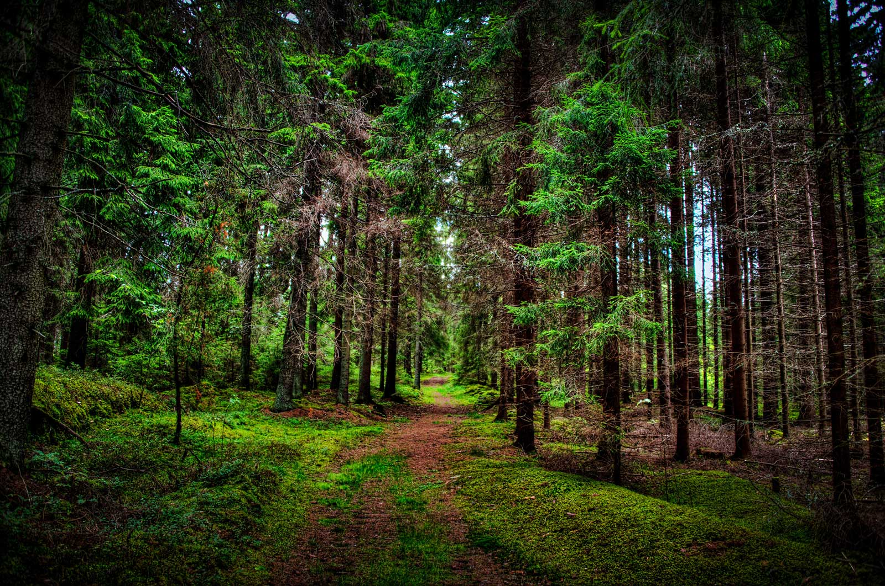
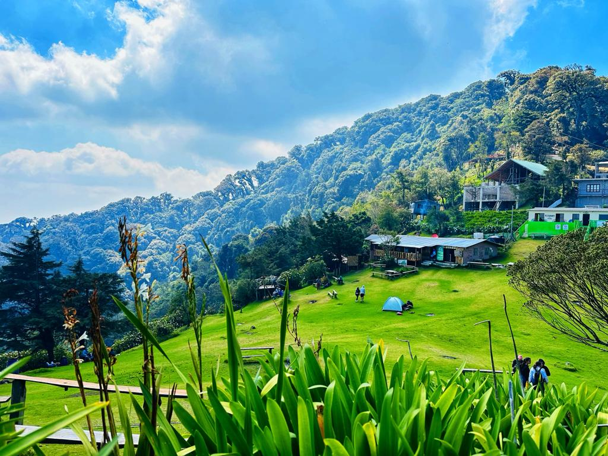

Historia
El Pital es el punto más alto de El Salvador, ubicado en el departamento de Chalatenango. Este lugar es famoso por su clima frío, sus paisajes montañosos y la abundante vegetación. Es un destino ideal para los amantes del ecoturismo, la observación de aves y la fotografía de naturaleza.
Ubicación
Se encuentra en el norte del país, en la frontera con Honduras. Su acceso se realiza desde los municipios de La Palma y San Ignacio. El camino hacia la cima ofrece vistas panorámicas de montañas y valles.
¿Por qué es famoso?
- Punto más alto: Es el lugar más alto de El Salvador con 2,730 metros sobre el nivel del mar. (El Salvador Travel)
- Clima fresco: Sus temperaturas bajas permiten ver heladas y niebla en ciertas épocas del año.
- Biodiversidad: Alberga bosques de pino y especies de flora y fauna únicas de la región.
Qué hacer en El Pital
- Senderismo: Explorar rutas hacia la cima y disfrutar de vistas panorámicas.
- Fotografía: Capturar paisajes montañosos y la fauna local.
- Observación de aves: Identificar especies endémicas y migratorias.
- Camping: Acampar en áreas permitidas y disfrutar del cielo estrellado.
Cómo llegar
En vehículo privado:
- Desde San Salvador, toma la carretera hacia Chalatenango y luego hacia La Palma.
- Continúa por caminos rurales hasta llegar a la entrada del cerro.
En transporte público:
- Desde San Salvador, toma un bus hacia Chalatenango o La Palma y luego transporte local hasta El Pital.
Galería


